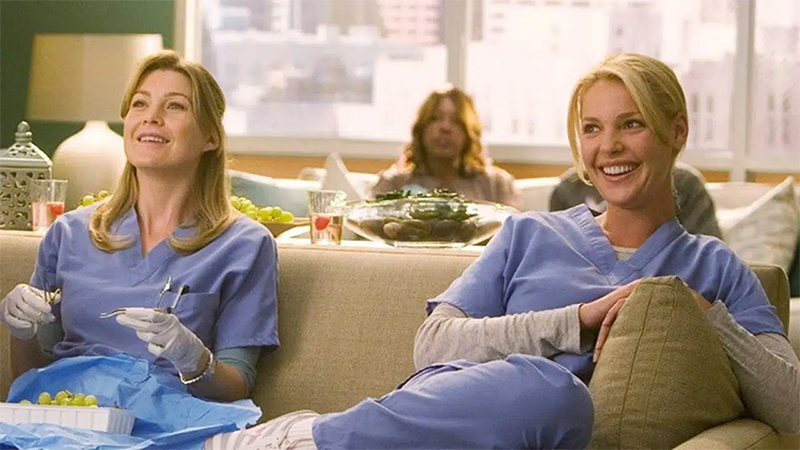

Grey's Anatomy
A série médica de enorme sucesso foca em um grupo de jovens médicos do Hospital Grace Mercy West, de Seattle, que começaram a carreira na própria instituição como residentes. Um dos jovens médicos que dá nome ao show, Meredith Grey, é filha de um famoso cirurgião. Meredith luta para manter as relações com seus colegas, especialmente o chefe do centro cirúrgico, Richard Webber, devido ao relacionamento que já existia entre os dois -- Webber teve um caso com a mãe de Meredith na época em que ela era jovem
1 até 3 curiosidades.1) Na primeira temporada, a série passou por diversas mudanças de nome. Ela foi chamada de "Doctors", "Surgeons" e depois "Complications", antes de decidirem por "Grey's Anatomy".
2) Shonda Rhimes teve a ideia de criar "Grey's Anatomy" assistindo a séries sobre cirurgias no Discovery Channel e conversando sobre isso com sua irmã.
3) Rhimes escreveu o roteiro original sem descrever nenhum personagem, com exceção de Miranda Bailey. Ela era descrita como uma "loira baixinha com cabelo encaracolado". Rhimes "achava que seria inusitado ter essa pessoa de aparência doce abrindo a boca e dizendo coisas duras".
4 até 6 curiosidades. 4) Então, atores de diversas etnias puderam fazer os testes para todos os personagens.
5) Originalmente a série se passaria em Chicago, cidade-natal de Rhimes, mas isso foi alterado porque era lá que também se passava a série "Plantão Médico" ["ER"].
6) Rob Lowe recusou o papel de Derek Shepher
7 até 10 curiosidades. 7) Patrick Dempsey recebeu o apelido de "McDreamy" no set antes do seu personagem.
8) Dempsey tinha muito medo de Rhimes quando a série começou a ser filmada. Durante o primeiro encontro entre os dois, Rhimes ficou apenas olhando para ele. Dempsey achou que Rhimes não tinha gostado dele, mas ela estava apenas pensando em diálogos para o seu personagem.
9) Alex Karev não estava no roteiro original do piloto. Na verdade, o piloto foi inteiramente gravado sem ele. As cenas com Justin Chambers foram digitalmente adicionadas posteriormente.
10) Apenas Ellen Pompeo, Justin Chambers, Chandra Wilson e James Pickens Jr. estão nos créditos de todos os 300 episódios.